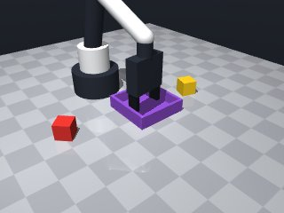

0 demonstrations · reward: gt · perception: real · 8 practice episodes in 1 rounds
Safety layer: 0 halts, 0 clamps.
| role | model | calls | tokens in | tokens out | USD |
|---|---|---|---|---|---|
| coder | nvidia/Nemotron-3-Ultra-550b-a55b | 1 | 1,684 | 1,090 | $0.0050 |
| summarizer | nvidia/Nemotron-3_5-Lightning | 0 | 0 | 0 | $0.0000 |
| compute | local | 96 s | $0.0000 | ||
| total | 1 | 1,684 | 1,090 | $0.0050 |
- First version: perceive yellow cube and tray poses, move to cube, grasp, move to tray, release, verify. - Use observe() for initial positions, then get_pose() for fresh reads before critical moves. - Approach cube at z=0.015 (cube center height) with yaw aligned to cube yaw. - For tray, approach above tray center, then lower to just above tray floor (z ~ 0.015 + cube half-height = 0.03) to clear walls. - Catch MotionError, retry with small offsets. - Verify grasp with robot.holding() and verify release by checking holding is None.
--- round_0/skill.py +++ round_1/skill.py @@ -0,0 +1,76 @@ +import math + +def run(robot): + # Perceive initial scene + obs = robot.observe() + yellow = obs["objects"].get("yellow_cube") + tray = obs["fixtures"].get("tray") + + if not yellow or not tray: + robot.log("Missing yellow cube or tray") + return False + + cube_pos = yellow["pos"] + cube_yaw = yellow["yaw"] + tray_pos = tray["pos"] + tray_half = tray["inner_half_size"] # 0.044 + wall_h = tray["wall_height"] # 0.025 + + # Cube center height on table + cube_z = 0.015 + # Tray floor is at z=0, walls 0.025 high. Place cube center at ~0.03 to clear walls. + place_z = 0.03 + + # --- Grasp yellow cube --- + for attempt in range(3): + try: + # Fresh pose read + cube_pose = robot.get_pose("yellow_cube") + cube_pos = cube_pose["pos"] + cube_yaw = cube_pose["yaw"] + + # Approach above cube + robot.move_to(cube_pos[0], cube_pos[1], 0.10, yaw=cube_yaw, speed=0.15) + # Descend to grasp height + robot.move_to(cube_pos[0], cube_pos[1], cube_z, yaw=cube_yaw, speed=0.05) + # Grasp + if robot.grasp(): + if robot.holding() == "yellow_cube": + robot.log("Grasped yellow cube") + break + robot.log(f"Grasp attempt {attempt+1} failed, retrying") + robot.release() + except Exception as e: + robot.log(f"Grasp error: {e}") + robot.home() + else: + robot.log("Failed to grasp after 3 attempts") + return False + + # --- Move to tray and place --- + for attempt in range(3): + try: + # Fresh tray pose + tray_pose = robot.get_pose("tray") + tray_pos = tray_pose["pos"] + + # Approach above tray center + robot.move_to(tray_pos[0], tray_pos[1], 0.15, speed=0.15) + # Lower into tray (above floor, below wall top) + robot.move_to(tray_pos[0], tray_pos[1], place_z, speed=0.05) + # Release + robot.release() + robot.wait(0.2) + if robot.holding() is None: + robot.log("Released yellow cube in tray") + # Verify cube is in tray by checking it's no longer held + return True + robot.log(f"Release attempt {attempt+1} failed, still holding") + except Exception as e: + robot.log(f"Place error: {e}") + robot.home() + else: + robot.log("Failed to place after 3 attempts") + return False + + return False

import math
def run(robot):
# Perceive initial scene
obs = robot.observe()
yellow = obs["objects"].get("yellow_cube")
tray = obs["fixtures"].get("tray")
if not yellow or not tray:
robot.log("Missing yellow cube or tray")
return False
cube_pos = yellow["pos"]
cube_yaw = yellow["yaw"]
tray_pos = tray["pos"]
tray_half = tray["inner_half_size"] # 0.044
wall_h = tray["wall_height"] # 0.025
# Cube center height on table
cube_z = 0.015
# Tray floor is at z=0, walls 0.025 high. Place cube center at ~0.03 to clear walls.
place_z = 0.03
# --- Grasp yellow cube ---
for attempt in range(3):
try:
# Fresh pose read
cube_pose = robot.get_pose("yellow_cube")
cube_pos = cube_pose["pos"]
cube_yaw = cube_pose["yaw"]
# Approach above cube
robot.move_to(cube_pos[0], cube_pos[1], 0.10, yaw=cube_yaw, speed=0.15)
# Descend to grasp height
robot.move_to(cube_pos[0], cube_pos[1], cube_z, yaw=cube_yaw, speed=0.05)
# Grasp
if robot.grasp():
if robot.holding() == "yellow_cube":
robot.log("Grasped yellow cube")
break
robot.log(f"Grasp attempt {attempt+1} failed, retrying")
robot.release()
except Exception as e:
robot.log(f"Grasp error: {e}")
robot.home()
else:
robot.log("Failed to grasp after 3 attempts")
return False
# --- Move to tray and place ---
for attempt in range(3):
try:
# Fresh tray pose
tray_pose = robot.get_pose("tray")
tray_pos = tray_pose["pos"]
# Approach above tray center
robot.move_to(tray_pos[0], tray_pos[1], 0.15, speed=0.15)
# Lower into tray (above floor, below wall top)
robot.move_to(tray_pos[0], tray_pos[1], place_z, speed=0.05)
# Release
robot.release()
robot.wait(0.2)
if robot.holding() is None:
robot.log("Released yellow cube in tray")
# Verify cube is in tray by checking it's no longer held
return True
robot.log(f"Release attempt {attempt+1} failed, still holding")
except Exception as e:
robot.log(f"Place error: {e}")
robot.home()
else:
robot.log("Failed to place after 3 attempts")
return False
return False